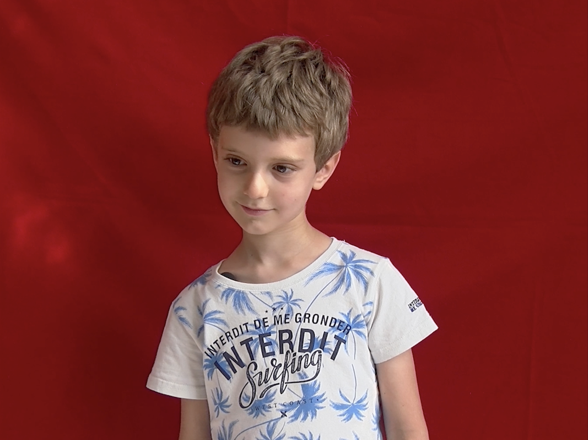
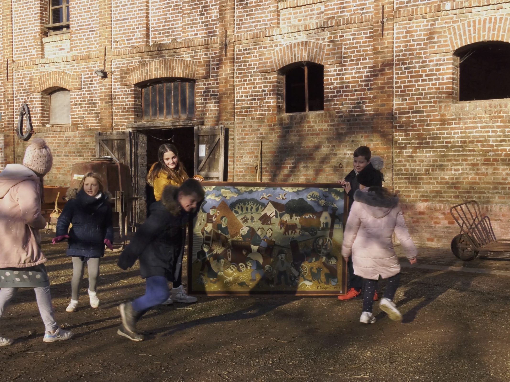
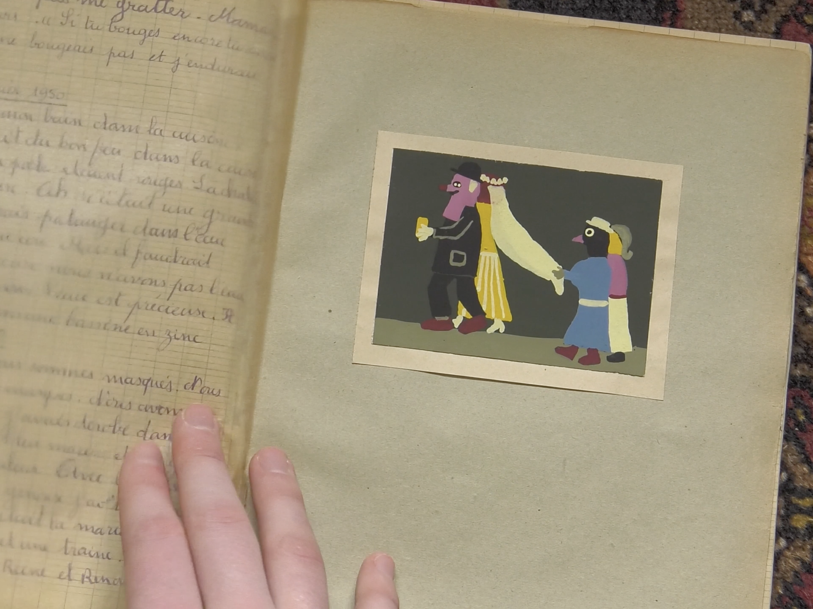
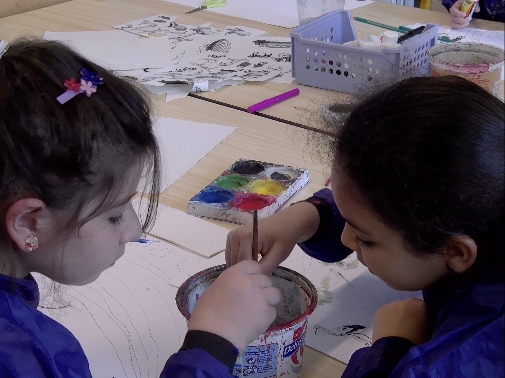

Affiche : Roméo Abergel
Affiche : Roméo Abergel
Pierre, papier ciseaux
Un court-métrage documentaire de Emma Duquet, 2024
Ce film est une enquête sur le travail de mon arrière-grand-père, Pierre. Artiste et instituteur dans les années 1950, il est l'un des premiers à apprendre aux enfants à peindre, dessiner et s'exprimer librement à l’école.
Sélections : Festival International du Film d’Amiens - 2024 ; Festival du Film de Famille de Saint-Ouen - 2025
Les membres de Ré/créations ont participé au tournage et à la production de ce film.




Réalisation : Emma Duquet
Assistanat de réalisation : Youna Rolland
Image : Pauline Delfino
Son : Albane Barrau
Montage : Marie Cointin, Marin Pobel
Mixage : Victor Gervaise
Etalonnage : Marthe Pitous
Production (structure) : Ré/créations
Ayant droit : Ré/créations